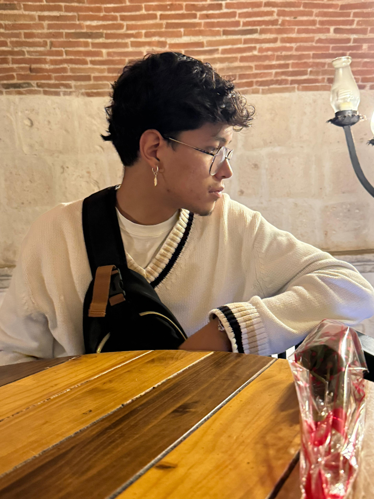

¿Quién soy?
Soy Jesús Fernando Valdivia Barreto, estudiante de Administración en la UCSP. Esta página fue creada como parte del curso Introducción a Ciencias de la Computación dictado por el profesor Ernesto Cuadros Vargas.
Soy peruano, nacido en Lambayeque. Tengo 22 años y me apasionan la música, la cocina y el deporte. Estudié música en el Conservatorio Luis Dunker Lavalle, y quiero estudiar cocina en Le Cordon Bleu en Lima. Desde niño soy aficionado al fútbol y fan del Real Madrid.
Puedes contactarme en: jefercito2002@hotmail.com
